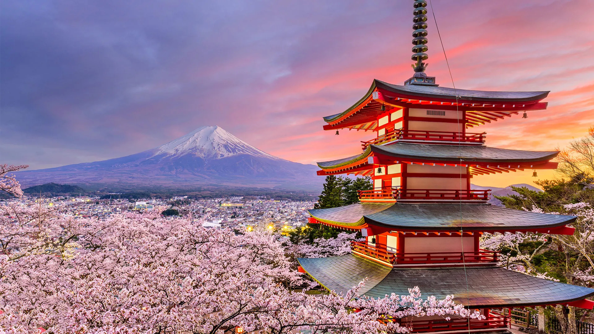

Tokyo is a city that defies easy description. As one of the world's most populous metropolises, it manages to feel both overwhelming and deeply intimate. Ancient shrines sit quietly beside glass towers, and centuries-old traditions coexist with cutting-edge technology.
Tokyo rewards curious visitors with an endless variety of experiences. Whether you are drawn to food, design, history, or pop culture, the city offers something on an extraordinary scale.
Tokyo's skyline and streetscape shift constantly depending on where you are. From serene temple grounds to dizzying neon corridors, the visual range is extraordinary.
Each of Tokyo's districts has a personality distinct enough to feel like a separate city. Moving between them is one of the great pleasures of exploring Tokyo.
Tokyo has a rich cultural landscape that extends far beyond its famous pop culture exports. World-class art museums, contemporary galleries, traditional performing arts, and experimental design studios all thrive here. The city hosts some of Asia's most significant cultural institutions.
Food in Tokyo is taken with extraordinary seriousness. Ramen shops refine their broth for years. Sushi chefs train for decades. Even convenience stores offer food of a quality that surprises most visitors. Eating in Tokyo, at any budget, is consistently rewarding.
Tokyo moves at a fast pace but maintains a remarkable sense of order and consideration. The city is dense yet rarely feels chaotic. There is a quiet discipline in daily life — trains run to the second, streets are clean, and strangers treat each other with care.
Tokyo is a city that asks for time and rewards patience. The more you explore its layers — the quiet back streets, the seasonal rituals, the neighborhood routines — the more remarkable it becomes. It is a place that stays with you long after you leave.